Le XRP est en train d'exploser complètement en ce moment, surperformant massivement le reste du marché des cryptomonnaies. Alors que j'ai su capitaliser sur ce mouvement pour générer des millions de profits, la plupart des gens restent encore sur la touche. Mais dans la vidéo d'aujourd'hui, je vous explique exactement pourquoi le XRP s'envole, si c'est encore le bon moment pour en acheter et, plus important encore, comment vous pouvez profiter de cette opportunité. Plongeons dans le vif du sujet.
Interface & Outils : Présentation ou face-caméra explicatif du trader sans interface logicielle partagée.
Contenu textuel & Code : Explications orales des stratégies et mise en contexte méthodologique du marché.
Action / Démonstration : Explications face caméra et analyse conceptuelle des marchés.
Partie 1. Pourquoi le XRP s'envole. Alors pourquoi le XRP s'envole-t-il comme un fou ? Analysons cela avec les vraies raisons en langage simple. Premièrement, l'euphorique approbation des ETF. La SEC vient d'approuver le tout premier ETF lié au XRP aux États-Unis, et il est sur le point d'être lancé. Cela signifie des tonnes de nouveaux capitaux provenant d'investisseurs institutionnels qui pourraient affluer, poussant les prix encore plus haut.
Interface & Outils : Crypto Bubbles et CryptoPotato (site web d'actualités crypto).
Contenu textuel & Code : Graphique de performance du XRP (+61.7% sur le mois, capitalisation de 206.17B$, volume 24h de 19.95B$) et article de presse annonçant l'approbation du ProShares XRP ETF par la SEC pour une cotation sur le NYSE Arca.
Action / Démonstration : Présentation des données de marché et de l'actualité de l'approbation de l'ETF XRP pour appuyer l'analyse de la hausse du token.
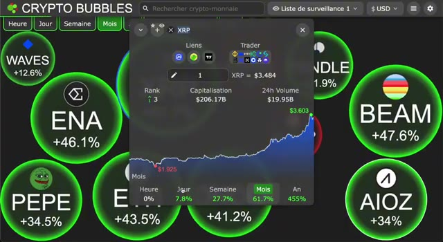
🔍 Agrandir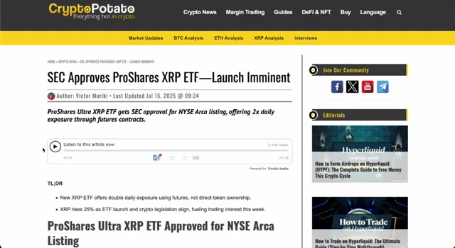
🔍 AgrandirParfois, nous voyons une immense vague d'achats institutionnels. L'intérêt ouvert sur les contrats à terme XRP vient d'atteindre 10 milliards de dollars. C'est une activité de baleine sérieuse et un signe clair que les professionnels parient gros. La bataille juridique avec la SEC est enfin en train de se terminer. L'affaire a traîné pendant des années, mais les investisseurs pensent maintenant que l'issue sera favorable à Ripple, libérant une adoption majeure. Voici la nouvelle chaîne latérale EVM sur le XRPL, qui permet de construire des applications compatibles Ethereum sur le grand livre XRP. Cela attire des développeurs, des dApps et une réelle utilité dans l'écosystème. Ripple a également lancé son nouveau stablecoin,
Interface & Outils : Navigateur web affichant Yahoo Finance et Brave New Coin.
Contenu textuel & Code : Articles de presse financière, manchettes sur les poursuites de la SEC, prévisions de prix et données sur l'intérêt ouvert XRP.
Action / Démonstration : Revue de presse et présentation des actualités macroéconomiques et judiciaires concernant XRP.
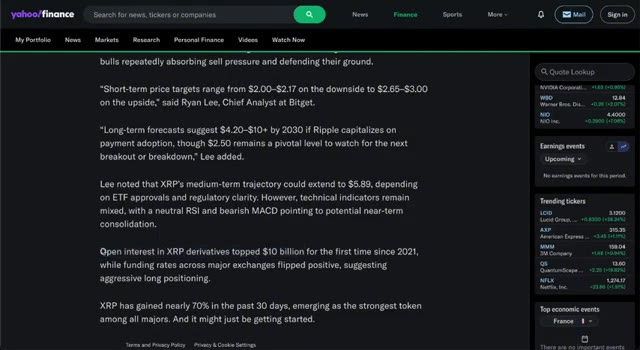
🔍 Agrandir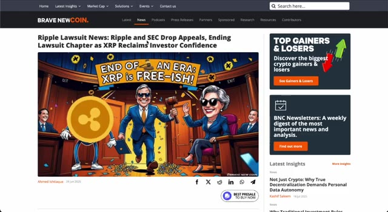
🔍 AgrandirRLUSD, et il est soutenu par de grandes banques comme Amina. De plus, ils demandent une licence bancaire américaine, faisant le pont entre la cryptomonnaie et la finance traditionnelle. Techniquement, XRP est également en train de sortir de sa tendance. Nous avons vu une croix dorée sur le graphique, un signal classique pour une forte tendance haussière, et le volume est en forte hausse.
Interface & Outils : Présentation ou face-caméra explicatif du trader sans interface logicielle partagée.
Contenu textuel & Code : Explications orales des stratégies et mise en contexte méthodologique du marché.
Action / Démonstration : Explications face caméra et analyse conceptuelle des marchés.
N'oublions pas, nous sommes dans un marché haussier global des cryptomonnaies. Bitcoin atteint de nouveaux sommets et les altcoins commencent à s'envoler. Ce genre de dynamique donne toujours un coup de pouce supplémentaire à XRP. Les banques ont désormais le feu vert pour utiliser XRP pour les paiements transfrontaliers rapides. Cela libère des billions de volumes potentiels. Avec une offre limitée, c'est la recette idéale pour une véritable compression des prix.
Interface & Outils : Sites web financiers (MarketWatch et AInvest)
Contenu textuel & Code : Articles de presse financière, titres d'actualité sur le Bitcoin et XRP, indicateurs boursiers en haut de page (DJIA, S&P 500, Nasdaq, VIX).
Action / Démonstration : Présentation d'actualités financières et d'articles de presse appuyant l'analyse du marché des cryptomonnaies.
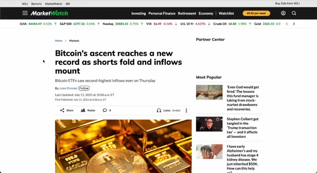
🔍 Agrandir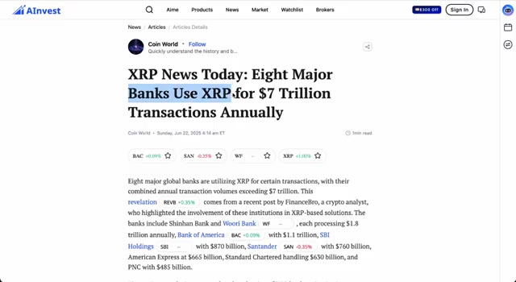
🔍 AgrandirLes testaments s'accumulent, les déficits de liquidité sont comblés et la peur de rater une opportunité se propage rapidement. Les réseaux sociaux sont en ébullition et les données on-chain confirment que les particuliers affluents. Enfin, la réglementation tourne en faveur du XRP. L'Union européenne, les États-Unis et même des pays comme les Émirats arabes unis élaborent des cadres qui pourraient pousser le XRP à devenir l'actif pont par défaut pour les monnaies numériques de banque centrale et même pour les règlements pétroliers. Deuxième partie, les graphiques ne mentent pas. Parlons des graphiques. Nous venons de sortir d'un immense triangle de consolidation de sept ans sur le
Interface & Outils : Site web d'actualités crypto (CryptoDNES) et interface de réseau social.
Contenu textuel & Code : Articles, titres et publications communautaires traitant de l'adoption institutionnelle du XRP, de la régulation européenne et de l'analyse du marché.
Action / Démonstration : Présentation visuelle d'articles d'actualité et de publications de réseaux sociaux pour illustrer le sentiment haussier et les avancées réglementaires du XRP.
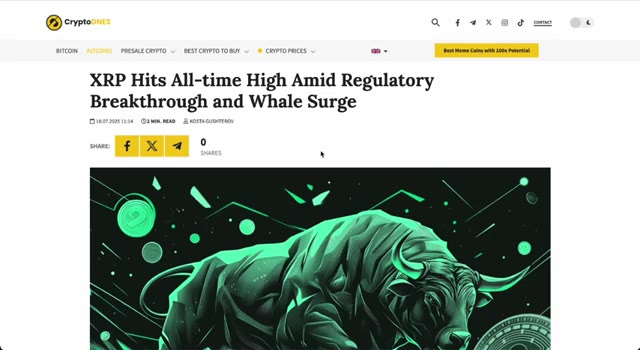
🔍 Agrandir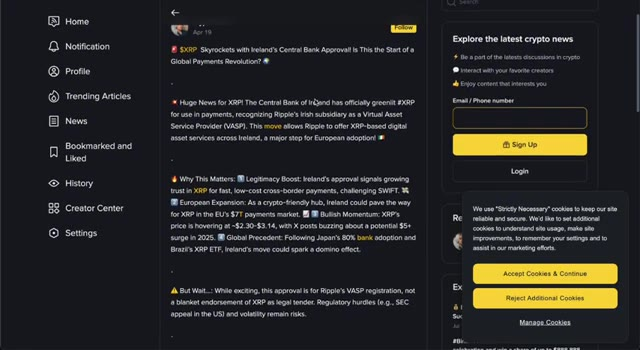
🔍 Agrandirgraphique Bitstamp. Ce n'est pas un petit mouvement. C'est de l'énergie de cassure générationnelle. Après cette première cassure, XRP a formé une courte phase de consolidation, et pas plus tard que la semaine dernière, nous avons à nouveau dépassé cette tendance baissière. En ce moment, nous dépassons les 3,50 $ et la dynamique devient inarrêtable.
Interface & Outils : TradingView (mode graphique sombre, barre d'outils latérale, panneau de cotations à droite).
Contenu textuel & Code : Graphique de prix XRP/USDT sur l'exchange Binance (1W), lignes de tendance tracées pour matérialiser la cassure générationnelle et la phase de consolidation, cours actuel affiché à 3.5135 USDT.
Action / Démonstration : Analyse technique du graphique illustrant la cassure haussière majeure de XRP et sa phase de consolidation récente.
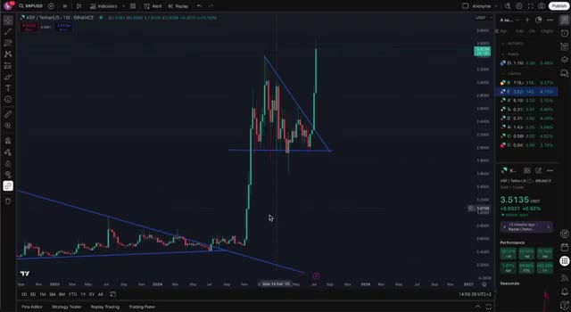
🔍 AgrandirÉcoutez, nous sommes officiellement dans la saison des altcoins. La force du Bitcoin profite toujours aux altcoins, et le XRP surfe parfaitement sur cette vague. Mais voici l'élément clé. Dans la crypto, le timing est primordial. Si vous attendez trop longtemps, vous ratez la hausse explosive. Si vous agissez trop tôt sans comprendre les fondamentaux, vous vous faites éliminer. Cet alignement des fondamentaux, de l'analyse technique et du timing, c'est rare. C'est pourquoi je mets le paquet sur le XRP en ce moment. Alors, est-ce toujours un bon moment pour acheter du XRP ?
Interface & Outils : Présentation ou face-caméra explicatif du trader sans interface logicielle partagée.
Contenu textuel & Code : Explications orales des stratégies et mise en contexte méthodologique du marché.
Action / Démonstration : Explications face caméra et analyse conceptuelle des marchés.
À mon avis, tout à fait. Mais laissez-moi être clair, ce n'est pas un conseil financier. Vous devez prendre vos propres décisions. Mais voici la vérité. Se contenter d'acheter et de conserver, ce n'est pas là que se fait le vrai argent. Les vrais profits proviennent du trading actif de ces mouvements, en entrant, en profitant de la hausse, et en sachant exactement quand sortir. C'est là que la magie opère. Laissez-moi vous montrer exactement comment je trade le XRP en ce moment, en utilisant Weeks. J'utilise Weeks parce qu'ils offrent les meilleurs bonus, des frais bas et un accès à un effet de levier de 10x. Si vous utilisez mon lien exclusif dans la description, vous obtiendrez des réductions massives sur les frais et des bonus de dépôt. Laissez-moi vous montrer. Voici ma configuration. Je suis
Interface & Outils : TradingView, navigateur web, interface d'échange WEEX, YouTube Studio.
Contenu textuel & Code : Graphique en chandeliers japonais XRP/USD, lignes de tendance géométriques, panneau latéral de cotations et de watchlist, formulaire d'inscription WEEX avec bonus.
Action / Démonstration : Analyse graphique des mouvements de prix de l'actif XRP et présentation promotionnelle de la plateforme de trading WEEX.
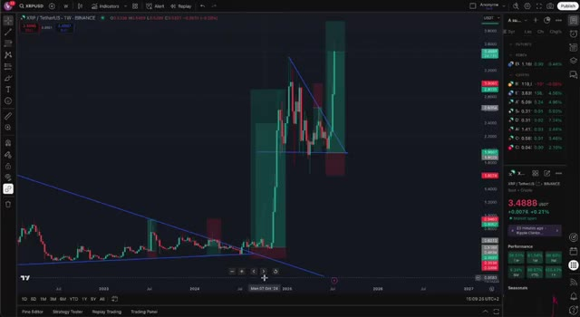
🔍 Agrandir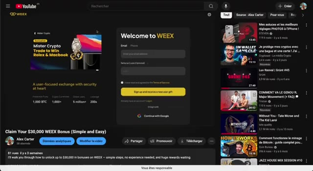
🔍 Agrandiren ouvrant une position longue sur XRP. J'utilise un effet de levier de 10x mais avec une gestion des risques stricte. Cela signifie que je définis mon point d'entrée. Je fixe un stop-loss clair et je sécurise mes profits avec un ordre take-profit. Cette stratégie me permet de multiplier les gains tout en limitant les pertes. Et la clé ? Ne pas être trop gourmand. Prenez vos profits par paliers, protégez votre capital, réentrez si nécessaire. Weeks rend tout ce processus fluide et adapté aux débutants. C'est pourquoi je les utilise. Très bien. Le XRP est en train de sortir de sa zone de consolidation. Les fondamentaux sont solides. Les graphiques virent au vert. C'est un moment rare. Et si
Interface & Outils : Échange de cryptomonnaies WEEX intégrant un graphique TradingView, un carnet d'ordres et un panneau de passage d'ordres pour contrats Futures.
Contenu textuel & Code : Graphique de prix XRP/USDT en unité 1D, indicateur Volume SMA 9, carnet d'ordres central, et panneau latéral affichant les options d'ordre Limit/Market, un TP réglé à 3.8250 et un SL configuré pour la gestion des risques.
Action / Démonstration : Configuration d'un ordre d'achat avec effet de levier (Open Long) intégrant les niveaux de Take-Profit (TP) et de Stop-Loss (SL) sur la plateforme WEEX.
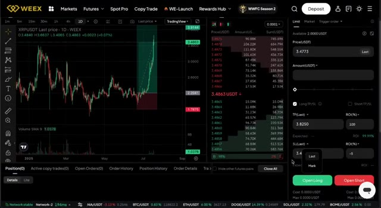
🔍 Agrandirwatching this video right now, you're early. But here's the thing. If you want to know the exact list of altcoins I'm buying right now, with the potential to 30x in the next three months, watch the video popping up on your screen right now. Trust me, you'll learn a lot from it. Catch you in the next one.
Interface & Outils : Crypto Bubbles (site web / application de visualisation de crypto-monnaies)
Contenu textuel & Code : Bulles de cryptomonnaies vertes indiquant des performances positives (WAVES +12.6%, ENA +46.1%, BEAM +47.6%, PEPE +34.5%, AIOZ +34%). Fenêtre pop-up sur XRP montrant un graphique de prix annuel, le cours actuel à 3.484 $, une capitalisation boursière de 206.17B$, un volume sur 24h de 19.95B$ et une performance annuelle de +455%.
Action / Démonstration : Consultation des performances de XRP et visualisation globale du marché crypto à travers l'interface Crypto Bubbles.
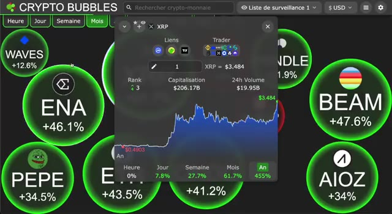
🔍 Agrandir